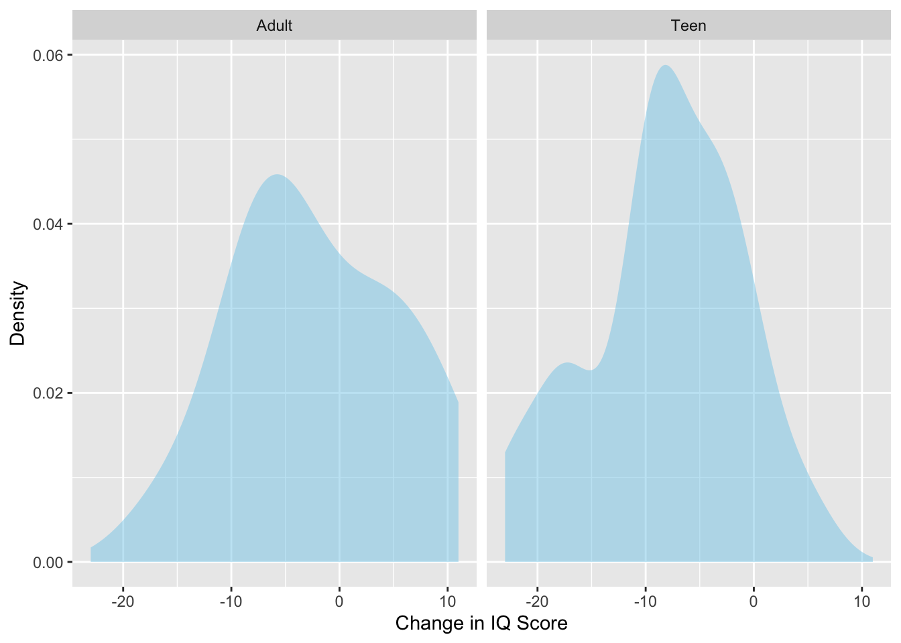
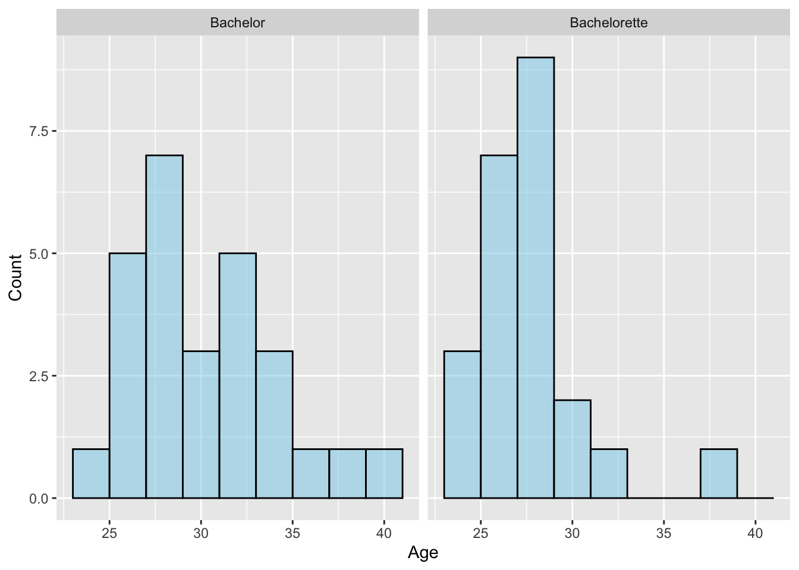

In this chapter you will learn how to carry out a two-sample t-test using R to statistically compare two samples of data by accounting for the sampling uncertainty.
13.1 Case Study: Cannabis Effects on IQ
In recent years, many states have legalized the use of marijuana for medical and recreational purposes. Marijuana use has been shown to have adverse impact on peoples’ health and well-being (Volkow et al., 2014), including long-term effects on IQ. This is especially true for adolescents and young adults since their brain is still developing. As you might expect, marijuana usage among younger people is quite prevalent. Based on data collected from the Center for Disease Control in 2019, 37% of U.S. high school students reported using marijuana at least once, and 22% reported use in the past 30 days.
To study the long-term effects of cannabis, Meier et al. (2012) examined data from a cohort of people who were followed for a 20 year time span. They identified participants who became persistent marijuana users during the course of the study and collected data on the change in IQ score between the start of the study (prior to the onset of any cannabis use) and then again 20 years later. Importantly, some of these participants were diagnosed with cannabis dependence prior to the 18 years of age (teen-onset) and others were not diagnosed with cannabis dependence until after 18 years of age (adult-onset).
We will use the data in cannabis.csv to evaluate whether the effects on IQ were different for users who started using marijuana as a teen.
When comparing two groups, the null hypothesis is that the population mean for the two groups is the same. In our example, the null hypothesis would be that the average decline in IQ scores for all persistent marijuana users that became dependent as adults is the same as the average decline in IQ scores for all persistent marijuana users that became dependent as teens. Mathematically:
The alternative hypothesis is either that the populations means are different, or a specification of how they are different. Since we want to determine if persistent marijuana users that became dependent as teens would have a different change in IQ than those who became dependent as adults, the alternative hypothesis would be:
The order of the two groups in the hypotheses does not matter. For example, we could also have written the hypotheses so that the mean for teen-onset was written before the mean for adult-onset:
However, when we go to use the t_test() function, the alternative hypothesis we specify will correspond to an alphabetical ordering of the groups based on their values in the attribute. In the cannabis_dep attribute, the two values are Teen and Adult.
We can also represent the hypotheses as a difference between the two means. For example, the null hypothesis posits the two means are equal. Mathematically this can be also expressed as the difference between the two means is equal to zero:
\[
H_0: \mu_{\text{Adult-onset}} - \mu_{\text{Teen-onset}} = 0
\] In a similar fashion the alternative hypothesis could be expressed as:
The output from t_result() will present the hypotheses as a difference between means.
13.3 Visualizing and Numerically Describing Sample Differences
As with every analysis, we begin by visualizing and describing the sample data. Here we will create density plots of the distribution of changes in IQ scores for both groups. To do this, since the IQ change scores are all in a single column, we have to change the formula with the tilde we use in the gf_ and df_stats() functions so that it will plot those for each group separately. The formula will now look like:
\[
\mathtt{\sim y ~|~ group}
\]
where y is the attribute name that you want to plot, and group is the name of the attribute that has the groups in it. For example, since we want to plot the IQ change scores for the two groups we would use the formula:
\[
\mathtt{\sim iq\_change ~|~ cannabis\_dep}
\]
READING SYNTAX
Reading this syntax, we would say: “model the attribute iq_change but separate this by cannabis_dep” You can also say: “model the attribute iq_change but condition this on cannabis_dep”. In statistics a conditional distribution is a distribution for a particular group.
The syntax for creating density plots and computing numerical summaries is shown below.
# Create histogramgf_density(~ iq_change | cannabis_dep, data = cannabis,fill ="skyblue", xlab ="Change in IQ Score",ylab ="Density" )# Compute numerical summariesdf_stats(~ iq_change | cannabis_dep, data = cannabis)
response cannabis_dep min Q1 median Q3 max mean sd n missing
1 iq_change Adult -16 -7 -3 4.0 11 -2.071429 7.770400 14 0
2 iq_change Teen -23 -11 -8 -3.5 5 -8.260870 7.136445 23 0
Figure 13.1: Density plots of IQ score changes for participants who became persistent marijuana users as teens and those who became persistent marijuana users as adults.

The density plots suggests that the distribution of change in IQ scores is not symmetric for either group. The distribution for participants who became persistent marijuana users as teens is also potentially bimodal. The average change in IQ score for participants who became persistent marijuana users as adults was \(-2.07\) points indicating that the average IQ score decreased by about two points throughout the duration of the study. In contrast, the average change in IQ score for participants who became persistent marijuana users as teens was \(-8.26\) points indicating that the average IQ score decreased by about eight points throughout the duration of the study. The was variation in IQ change in both groups, with both groups having a standard deviation near seven.
Next, we carry out a two-sample t-test. The arguments we include are:
A formula of ~y|group indicating the attribute to compare, and the groups that are being compared;
data= indicating the data frame the attributes are in;
mu= to specify the value of the difference in population means specified in the null hypothesis;
alternative= is one of two.sided, less, or greater that corresponds to the alternative hypothesis; and
var.equal=TRUE which ensures that you use the correct version of the two-sample t-test
We can assign the output of the t_test() function into an object, and use the t_results() and plot_t_dist() functions to examine the output of the two-sample t-test and view the t-distribution and shaded p-value, respectively.
# Two-sample t-testmy_t <-t_test(~ iq_change | cannabis_dep, data = cannabis, mu =0, alternative ="two.sided", var.equal =TRUE )# View t-test resultst_results(my_t)
--------------------------------------------------
Two Sample t-test
--------------------------------------------------
H[0]: mu_[Adult] = mu_[Teen]
H[A]: mu_[Adult] ≠ mu_[Teen]
t(35) = 2.474706
p = 0.01832593
--------------------------------------------------
PROTIP
When you get the results from the t-test, be sure it says “Two Sample t-test”. If it says “Welch Two Sample t-test” you forgot to set the argument var.equal=TRUE.
# View t-distributionplot_t_dist(my_t)
Figure 13.2: Density plot of the t-distribution of the sample means based on the thought experiment underlying a hypothesis test assuming that the difference in mean IQ score change between participants who became persistent marijuana users as adults and those that became persistent marijuana users as teens is 0 (t-value of 0). The red vertical lines represents the observed t-value of 2.47 and -2.47. The shaded area under the curve to the right of 2.47 and left of -2.47 represent the associated p-value of .018 that corresponds to the alternative hypothesis that \(\mu\neq0\).
Based on the p-value of .018, we would reject the null hypothesis. The evidence suggests that the difference in average IQ score change is likely different for participants who became persistent marijuana users as adults than those that became persistent marijuana users as teens.
13.4 Computing the Observed t-Value and Degrees-of-Freedom
The observed t-value is computed as part of using the t_test() function, but examining the mathematical formula may give us insight into what this t-statistic is measuring. In a two-sample t-test the t-value is computed as:
\[
t = \frac{(\bar{y}_{1} - \bar{y}_{2}) - \mu_{\text{Diff.}}}{SE_{\text{Mean Diff.}}}
\]
where,
\(\bar{y}_1\) is the sample mean for Group 1, \(\bar{y}_2\) is the sample mean for Group 2, \(\mu_{\text{Diff.}}\) is the mean difference specified in the null hypothesis, and \(SE_{\text{Mean Diff.}}\) is the standard error for the sample mean difference, which is computed as:
And \(SD_1\) and \(SD_1\) are the sample standard deviations for Groups 1 and 2, respectively, and \(n_1\) and \(n_2\) are the sample sizes for those groups.
Looking at the numerator of the t-value, we are measuring how far the sample mean difference is from the hypothesized mean difference. Then, we are dividing by the SE, which changes the scale to standard error units. So our observed t-value is measuring the discrepancy between the sample and hypothesized mean difference in standard error units. In our example,
That is our observed mean difference of 6.19 is 2.47 standard errors from the hypothesized mean difference of 0. We then evaluate this t-value in a t-distribution with \(n1 + n_2 -2\) degrees-of-freedom. In our case the t-value of 2.47 is evaluated in a t-distribution with 35 df. This is the same thing we got in the output of t_results().
Since the alternative hypothesis was \(\mu_{\text{Adult-onset}} - \mu_{\text{Teen-onset}} \neq 0\), to find the p-value, we would find the area under the t-distribution that is greater than or equal to the observed t-value of 2.47 and less than or equal to \(-2.47\). This area is shaded in the output of plot_t_dist() and corresponds to .018 of the entire area under the curve.
13.5 Case Study 2: Bachelor and Bachelorette Ages
Research suggests that men emotionally mature years later than women. This is because the human brain develops slower in men than in women, on average. In the reality television series The Bachelor and The Bachelorette, a single person is introduced to a pool of potential romantic interests. Throughout the show, they get to know these people by going on dates with them and eliminating those they are not interested in. At the end of the show, they are supposed to select one person that will become their fiancé. If there is a maturity gap between men and women, we might expect that the average age for Bachelor and Bachelorette contestants may differ.
We will use the data in bachelor.csv to evaluate whether there are age differences between those people selected to be The Bachelor and those selected to be The Bachelorette. In particular we will test the following hypotheses:
# A tibble: 50 × 10
show season run_dates name age winner runner_up proposal still_together
<chr> <dbl> <chr> <chr> <dbl> <chr> <chr> <chr> <chr>
1 Bachel… 1 March 25… Alex… 31 Amand… Trista R… No No
2 Bachel… 2 Septembe… Aaro… 28 Helen… Brooke S… Yes No
3 Bachel… 3 March 24… Andr… 27 Jen S… Kirsten … Yes No
4 Bachel… 4 Septembe… Bob … 32 Estel… Kelly Jo… No No
5 Bachel… 5 April 7 … Jess… 25 Jessi… Tara Huc… No No
6 Bachel… 6 Septembe… Byro… 40 Mary … Tanya Mi… Yes No
7 Bachel… 7 March 28… Char… 29 Sarah… Krisily … No No
8 Bachel… 8 January … Trav… 33 Sarah… Moana Di… No No
9 Bachel… 9 October … Lore… 34 Jenni… Sadie Mu… No No
10 Bachel… 10 April 2 … Andy… 30 Tessa… Bevin Po… Yes No
# ℹ 40 more rows
# ℹ 1 more variable: relationship_status <chr>
Below we create the distribution of ages for the bachelors and bachelorettes. Both distributions are right-skewed and have a range between about 25 and 40. The average age for the bachelor contestants is 30.7 while that for the Bachelorette contestants is slightly younger at 28.2. The SD for these distributions is slightly higher for the Bachelor contestants (3.80) than for the Bachelorette contestants (3.04) indicating a little more variation in the bachelors’ ages.
# Create histogramgf_histogram(~age | show, data = bachelor,binwidth =2,color ="black", fill ="skyblue",xlab ="Age",ylab ="Count" )# Compute numerical summariesdf_stats(~age | show, data = bachelor)
response show min Q1 median Q3 max mean sd n missing
1 age Bachelor 25 28.0 30 33 40 30.70370 3.800960 27 0
2 age Bachelorette 24 26.5 28 29 39 28.17391 3.039919 23 0
Figure 13.3: Histograms of ages for the 27 Bachelor and 23 Bachelorette contestants.

While the sample data suggests that the average age for Bachelor contestants is higher than the average age of Bachelorette contestants, is this difference only due to sampling variation? To answer this, we will carry out a two-sample t-test to evaluate the sample differences in light of the expected sampling variation.
# Two-sample t-testmy_t <-t_test(~age | show, data = bachelor, mu =0, alternative ="two.sided",var.equal =TRUE )# View t-test resultst_results(my_t)
--------------------------------------------------
Two Sample t-test
--------------------------------------------------
H[0]: mu_[Bachelor] = mu_[Bachelorette]
H[A]: mu_[Bachelor] ≠ mu_[Bachelorette]
t(48) = 2.567151
p = 0.0134258
--------------------------------------------------
Exercises: Your Turn
Write the hypotheses as a difference in the average ages of the Bachelor and Bachelorette contestants.
Use the results of the two-sample t-test to sketch the t-distribution with 48 df, add vertical lines at the observed t-value (and \(-\)t-value), and shade the area under the curve corresponding to the p-value.
Your sketch should look something like the following.
# View t-distributionplot_t_dist(my_t)
Figure 13.4: Density plot of the t-distribution of the difference in sample means based on the thought experiment underlying a hypothesis test assuming that the difference in mean age between Bachelor and Bachelorette contestants is 0 (t value of 0). The red vertical lines represent the observed t-value of 2.57 and -2.57. The shaded area under the curve to the right of 2.57 and left of -2.57 show the associated p-value of .013 that corresponds to the alternative hypothesis that the average age for the Bachelor contestants is different than the average age of the Bachelorette contestants.
Based on the results of the t-test, should we reject or fail to reject the null hypothesis? Explain why and also what this implies given the context of the case study.
The p-value of .013 suggest we should reject the null hypothesis that the average age of Bachelor and Bachelorette contestants are the same (or that the difference between these averages is 0) since it is less than .05. This suggests that the average age for Bachelor contestants is different than the average age for Bachelorette contestants.
References
Meier, M. H., Caspi, A., Ambler, A., Harrington, H., Houts, R., Keefe, R. S. E., McDonald, K., Ward, A., Poulton, R., & Moffitt, T. E. (2012). Persistent cannabis users show neuropsychological decline from childhood to midlife. Proc Natl Acad Sci U S A, 109(40), E2657–64. https://doi.org/10.1073/pnas.1206820109
Volkow, N. D., Baler, R. D., Compton, W. M., & Weiss, S. R. B. (2014). Adverse health effects of marijuana use. N Engl J Med, 370(23), 2219–2227. https://doi.org/10.1056/NEJMra1402309
![Density plot of the t-distribution of the sample means based on the thought experiment underlying a hypothesis test assuming that the difference in mean IQ score change between participants who became persistent marijuana users as adults and those that became persistent marijuana users as teens is 0 (t-value of 0). The red vertical lines represents the observed t-value of 2.47 and -2.47. The shaded area under the curve to the right of 2.47 and left of -2.47 represent the associated *p*-value of .018 that corresponds to the alternative hypothesis that mu not equal to 0.](05-01-two-sample-t-test_files/figure-html/fig-t-dist3-1.png)
![Density plot of the *t*-distribution of the difference in sample means based on the thought experiment underlying a hypothesis test assuming that the difference in mean age between Bachelor and Bachelorette contestants is 0 (*t* value of 0). The red vertical lines represent the observed *t*-value of 2.57 and -2.57. The shaded area under the curve to the right of 2.57 and left of -2.57 show the associated *p*-value of .013 that corresponds to the alternative hypothesis that the average age for the Bachelor contestants is different than the average age of the Bachelorette contestants.](05-01-two-sample-t-test_files/figure-html/fig-t-dist2-1.png)